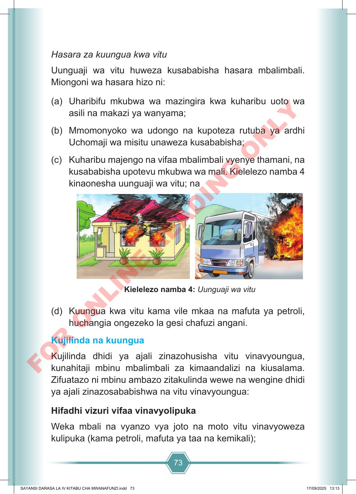

73 Hasara za kuungua kwa vitu Uunguaji wa vitu huweza kusababisha hasara mbalimbali. Miongoni wa hasara hizo ni: (a) Uharibifu mkubwa wa mazingira kwa kuharibu uoto wa asili na makazi ya wanyama; (b) Mmomonyoko wa udongo na kupoteza rutuba ya ardhi Uchomaji wa misitu unaweza kusababisha; (c) Kuharibu majengo na vifaa mbalimbali vyenye thamani, na kusababisha upotevu mkubwa wa mali. Kielelezo namba 4 kinaonesha uunguaji wa vitu; na Kielelezo namba 4: Uunguaji wa vitu (d) Kuungua kwa vitu kama vile mkaa na mafuta ya petroli, huchangia ongezeko la gesi chafuzi angani. Kujilinda na kuungua Kujilinda dhidi ya ajali zinazohusisha vitu vinavyoungua, kunahitaji mbinu mbalimbali za kimaandalizi na kiusalama. Zifuatazo ni mbinu ambazo zitakulinda wewe na wengine dhidi ya ajali zinazosababishwa na vitu vinavyoungua: Hifadhi vizuri vifaa vinavyolipuka Weka mbali na vyanzo vya joto na moto vitu vinavyoweza kulipuka (kama petroli, mafuta ya taa na kemikali); SAYANSI DARASA LA IV KITABU CHA MWANAFUNZI.indd 73 SAYANSI DARASA LA IV KITABU CHA MWANAFUNZI.indd 73 17/09/2025 13:13 17/09/2025 13:13 F O R O N L I N E R E A D I N G O N L Y